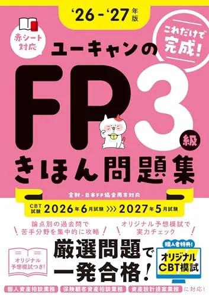
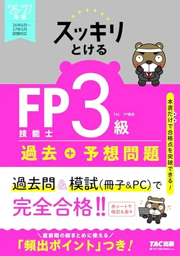

FP3級のおすすめ問題集3選【2026年度版·過去問·予想模試】
FP3級の問題集は、テキスト第1周のあとに「演習量を確保する第2冊」として1冊選ぶのが定番です。本記事はみんなが欲しかった! FPの問題集3級、ユーキャンのFP3級 きほん問題集、スッキリとける過去＋予想問題 FP技能士3級の3冊を比較します。学科60問90分·実技20問60分·合格ライン60％が本番形式です（要項で再確認）。価格・在庫・版情報は執筆時点（2026-06-12）のAmazon税込参考です。購入前に必ず販売ページでご確認ください。例えば8/2（土）に問題集1冊を追加し、10月受験前に学科40問通しで36問以上を2回確認する流れが現実的です。
この記事の要点
本記事を読むと、テキスト読了後に買う演習1冊の優先順位が分かり、たとえば「8月テキスト第1周50％→8/2みんなが欲しかった問題集購入→9月学科通し2回→第8週から実技20問週1回」まで演習計画を設計できます。
- 「2025-2026年版 みんなが欲しかった! FPの問題集3級」
- 「これだけで完成！ユーキャンのFP3級 きほん問題集 '26～'27年版」
- 「2026-2027年版 スッキリとける過去＋予想問題 FP技能士3級」
- 演習1冊
- テキスト40％以降
この記事の信頼性について
| 執筆 | FP3級マスター編集部（資格学習サイトの編集チーム） |
|---|---|
| 確認 | 公式情報確認担当（公開前に一次情報との照合を行う担当者） |
| 事実確認日 | 2026-06-12 |
| 主な参照元 |
1問題集を買うタイミング：テキスト第1周40％以降
問題集はテキストの置き換えではなく、演習量を確保する第2冊です。テキスト第1周が40％を超え、6科目の弱点が数値化してから購入すると消化が追いつきます。
| 信号 | 意味 |
|---|---|
| 第1周40％ | 問題集1冊の購入タイミング |
| 累計演習200問未満 | 当サイト一問一答を先に週30問追加 |
| 学科通し34問未満 | 解き直し週を2週確保してから申込 |
3冊同時購入は避け、FP3級のおすすめテキスト3選 で決めたテキスト1冊と縦串で選んでください。
おすすめ問題集3選（比較）
価格・在庫・版情報は執筆時点（2026-06-12）のAmazon税込参考です。購入前に必ず販売ページでご確認ください。
| 順位 | 商品名 | 価格（税込参考） | ページ数 | 向いている人 |
|---|---|---|---|---|
| 1 | 2025-2026年版 みんなが欲しかった! FPの問題集3級 | ¥1,760 | 520 | みんなが欲しかったテキストと縦串で厳選過去問演習をしたい人 |
| 2 | これだけで完成！ユーキャンのFP3級 きほん問題集 '26～'27年版 | ¥1,650 | 304 | ユーキャンきほんテキスト読了後に頻出問題を効率演習したい人 |
| 3 | 2026-2027年版 スッキリとける過去＋予想問題 FP技能士3級 | ¥1,650 | 368 | 過去問と予想問題を1冊でコンパクトに回したい社会人 |

2025-2026年版 みんなが欲しかった! FPの問題集3級
- 本試験問題から厳選·CBT模試プログラム付き
- 姉妹テキストと章立ての相性がよい定番
- 実技3種（個人·保険·資産）に対応

これだけで完成！ユーキャンのFP3級 きほん問題集 '26～'27年版
- 頻出厳選·オリジナル予想模擬試験つき
- きほんテキストへのリンクで復習が速い
- CBT模試特典で画面演習に接続

2026-2027年版 スッキリとける過去＋予想問題 FP技能士3級
- 科目別精選過去問＋予想問題が1冊
- 赤シート付きで暗記復習向き
- テキスト1冊と役割分担しやすい薄型
23冊の比較表（形式·価格·役割）
執筆時点（2026-06-12）のAmazon税込参考です。購入前に販売ページで再確認してください。
| 順位 | 書名 | 税込参考 | 役割 |
|---|---|---|---|
| 1 | みんなが欲しかった 問題集 | 1,760円 | 厳選過去問·CBT模試·テキスト縦串 |
| 2 | ユーキャン きほん問題集 | 1,650円 | 頻出厳選·予想模試·32日テキスト連動 |
| 3 | スッキリ 過去+予想 | 1,650円 | 過去問+予想を薄型1冊で回す |
- 第1冊目はテキストと同系列（みんなが欲しかった or ユーキャン）
- 演習量を薄型で増やすならスッキリ
- が定番の切り分け
3みんなが欲しかった 問題集：厳選過去問·CBT模試
「2025-2026年版 みんなが欲しかった! FPの問題集3級」（TAC出版·520頁·Amazon税込参考1,760円）は、本試験問題から厳選した解説厚めの定番問題集です。
- 2026-2027年版（ISBN9784300120859）は発売済みですが
- 執筆時点でAmazon掲載が2025-2026版のため
- 購入前に表紙年度を必ず確認してください
- 向いている人：おすすめテキスト3選でみんなが欲しかった教科書を選んだ人
- CBT模試プログラムで画面演習を早めに体験したい人
- 実技3種すべての演習を1冊で回したい人
章末で当サイト一問一答15問を足すと定着率が上がります。
4ユーキャン きほん問題集：頻出厳選·予想模試
「これだけで完成！ユーキャンのFP3級 きほん問題集 '26～'27年版」（自由国民社·304頁·Amazon税込参考1,650円）は、頻出問題を厳選した効率演習型です。
- 向いている人：ユーキャン32日テキストで第1周した人
- 巻末の予想模擬試験で総仕上げしたい人
- 予算を1
- 700円台に抑えつつCBT模試特典も欲しい人
みんなが欲しかった問題集と併用する場合は、どちらか1冊を主·もう1冊は弱点科目のみ、と役割を分けてください。
5スッキリ 過去+予想：コンパクト1冊·社会人向け
「2026-2027年版 スッキリとける過去＋予想問題 FP技能士3級」（TAC出版·368頁·Amazon税込参考1,650円）は、科目別過去問と予想問題を薄型1冊にまとめたコンパクト型です。
- 向いている人：通勤時間で演習を回したい社会人
- テキストがみんなが欲しかった以外でも演習1冊だけ足したい人
- 過去問と予想を分冊せずに済ませたい人
テキスト縦串より演習効率を優先する第2冊として使いやすいです。
69月の学科通しと解き直しループ
問題集導入後。
- 学科40問通し→誤答6科目タグ→7日後解き直し
- のループ
残り16週·週6時間の例です。
| 週 | 作業 |
|---|---|
| 月 | 問題集15問（記録·分析 /#dash） |
| 水 | 誤答5問を当サイト用語解説で確認 |
| 土 | 同15問解き直し |
| 月末 | 学科40問通し·36問以上を計測 |
36問未満が2回続く科目だけ週20問に増やし、第8週から実技20問60分を週1回追加してください。
7次に読む：テキスト比較と無料演習
問題集1冊が決まったら、次の記事へ進んでください。
・テキスト選び → おすすめテキスト3選
・一問一答切替 → 一問一答と過去問の使い分け
・過去問のみ可否 → テキストなしで過去問だけで合格できるか
・勉強時間 → 勉強時間の目安
・無料演習 → 過去問を解く（無料）
収益リンクは比較表のAmazonボタンと本文下の関連リンクに集約しています。
8よくある質問
過去問だけで合格できますか？
問題集はいつ買えばよいですか？
みんなが欲しかったとスッキリはどちらがよいですか？
記事の基本情報
| ジャンル | 学習ツール・サイト活用 |
|---|---|
| タグ | 過去問 / 問題集 |
公式情報の確認
公式情報の確認：ファイナンシャル・プランナー試験（FP3級）の最新情報は、日本FP協会（公式）などの公式情報を必ず確認してください。本人に割り当てられた試験会場は受験票の表記が正本です。